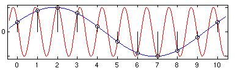

What is digital audio?
Since we'll be using Pure Data to create sound, and since Pd treats sound as just another set of numbers, it might be useful to review how digital audio works. We will return to these concepts in the audio tutorial later on.

A diagram showing how sound travels through your computer. The "Analog to Digital" & "Digital to Analog Conversion" is done by the soundcard. The "Digital System" in this case is Pure Data.
Source: http://en.wikipedia.org/wiki/Image:Analogue_Digital_Conversion.png
{kind=link}
Frequency and Gain
First, imagine a loudspeaker. It moves the air in front of it and makes a sound. The membrane of the speaker must vibrate from it's center position (at rest) backwards and forwards. The number of times per second it vibrates makes the frequency (the note, tone or pitch) of the sound you hear, and the distance it travels from it's resting point determines the gain (the volume or loudness) of the sound. Normally, we measure frequency in Hertz (Hz) and loudness or gain in Decibels (dB).

A microphone works in reverse - vibrations in the air cause its membrane to vibrate. The microphone turns these acoustic vibrations into an electrical current. If you plug this microphone into your computer's soundcard and start recording, the soundcard makes thousands of measurements of this electric current per second and records them as numbers.
Sampling Rate and Bit Depth
To make audio playable on a Compact Disc, the computer must make 44,100 measurements (called samples) per second, and record each one as a 16-bit number. One bit is a piece of information which is either 0 or 1, and if there are 16 bits together to make one sample then there are 216 (or 2x2x2x2x2x2x2x2x2x2x2x2x2x2x2x2 = 65,536) possible values that each sample could have. Thus, we can say that CD-quality audio has a sampling rate of 44,100 Hz and a bit-depth or word length of 16 bits. In contrast, professional music recordings are usually made at 24-bit first to preserve the highest amount of detail before being mixed down to 16-bit for CD, and older computer games were famous for having a distinctively rough 8-bit sound. By increasing the sampling rate, we are able to record higher sonic frequencies, and by increasing the bit-depth or word length we are able to use a greater dynamic range (the difference between the quietest and the loudest sounds it is possible to record and play).

An example of 4-bit sampling of a signal (shown in red). This image shows that 16 possible values can be made from 4-bits--a very low dynamic range indeed! In Pd, our scale of numbers goes from -1 to 1, with 0 in the middle. Source: http://en.wikipedia.org/wiki/Image:Pcm.svg
The number we use to record each sample has a value between -1 and +1, which would represent the greatest range of movement of our theoretical loudspeaker, with 0 representing the speaker at rest in the middle position.
{kind=link}

Graphical depiction of a sine wave, which crosses zero from the negative to the positive domain.
When we ask Pd to play back this sound, it will read the samples back and send them to the soundcard. The soundcard then converts these numbers to an electrical current which causes the loudspeaker to vibrate the air in front of it and make a sound we can hear.
Speed and Pitch Control
If we want to change the speed at which the sound is played, we can read the samples back faster or slower than the original sampling rate. This is the same effect as changing the speed of record or a tape player. The sound information is played back at a different speed, and so the pitch of the sound changes in relation to the change in speed. A faster playback rate increases the pitch of the sound, while a slower playback rate lowers the pitch.
Volume Control, Mixing and Clipping
If we want to change the volume of the sound, we have to multiply the numbers which represent the sound by another number. Multiplying them by a number greater than 1 will make the sound louder, and multiplying them by a number between 1 and zero will make the sound quieter. Multiplying them by zero will mute them - resulting in no sound at all. We can also mix two or more sounds by adding the stream of numbers which represent them together to get a new stream of sound. All of these operations can take place in real-time as the sound is playing.
However, if the range of numbers which represents the sound becomes greater than -1 to 1, any numbers outside of that range will be truncated (reduced to either -1 or 1) by the soundcard. The resulting sound will be clipped (distorted). Some details of the sound will be lost and frequencies that were not present before will be heard.

The waveform on the left is at full volume (i.e. it's peaks are at -1 and 1). The volume of the waveform on the right has been doubled, so that it peaks at -2 and 2. The graph shows what would be heard from the soundcard: a clipped signal with the peaks of the sinewave removed.
The Nyquist Number and Foldover/Aliasing
Another problem occurs if one tries to play back a frequency which is greater then half the sampling rate which the computer is using. If one is using a sampling rate of 44,100 Hz, the highest frequency one could theoretically play back without errors is 22,050 Hz. The reason being, a computer needs at least two samples to reproduce a single frequency. The number that represents half the sampling rate is called the Nyquist number.
If you were to tell Pd to play a frequency of 23,050 Hz, what you would hear is one tone at 23,050 Hz, and a second tone at 21,050 Hz. The difference between the Nyquist number (22,050 Hz) and the synthesized sound (23,050 Hz) is 1,000 Hz, which you would both add to and subtract from the Nyquist number to find the actual frequencies heard. So as one increased the frequency of the sound over the Nyquist number, you would hear one tone going up, and another coming down. This problem is referred to as foldover or aliasing.

Here we can see two possible waveforms which could be described by the samples show. The red line shows the intended waveform, and the blue line shows the "aliased" waveform at <Desired Frequency> - (<Desired Frequency> - <Nyquist Number>).
Source: http://en.wikipedia.org/wiki/Image:AliasingSines.png
{kind=link}
DC Offset
DC offset is caused when a waveform doesn't cross the zero line, or has unequal amounts of signal in the positive and negative domains. This means that, in our model speaker, the membrane of the speaker does not return to its resting point during each cycle. This can affect the dynamic range of the sound. While DC offset can be useful for some kinds of synthesis, it is generally considered undesirable in an audio signal.

An example of DC offset: the waveform is only in the positive domain.
Block Size
Computers tend to process information in batches or chunks. In Pd, these are known as Blocks. One block represents the number of audio samples which Pd will compute before giving output. The default block size in Pd is 64, which means that every 64 samples, Pd makes every calculation needed on the sound and when all these calculations are finished, then the patch will output sound. Because of this, a Pd patch cannot contain any DSP loops, which are situations where the output of a patch is sent directly back to the input. In such a situation, Pd would be waiting for the output of the patch to be calculated before it could give output! In other words, an impossible situation. Pd can detect DSP loops, and will not compute audio when they are present. For more information, see the "Troubleshooting" section.
It's All Just Numbers
The main thing to keep in mind when starting to learn Pure Data is that audio and everything else is just numbers inside the computer, and that often the computer doesn't care whether the numbers you are playing with represent text, image, sound or other data. This makes it possible to make incredible transformations in sound and image, but it also allows for the possibility to make many mistakes, since there is no 'sanity checks' in Pure Data to make sure you are asking the program to do something that is possible. So sometimes the connections you make in Pd may cause your computer to freeze or the application to crash. To protect against this save your work often and try not to let this bother you, because as you learn more and more about this language you will make fewer and fewer mistakes and eventually you will be able to program patches which are as stable and predictable as you want them to be.